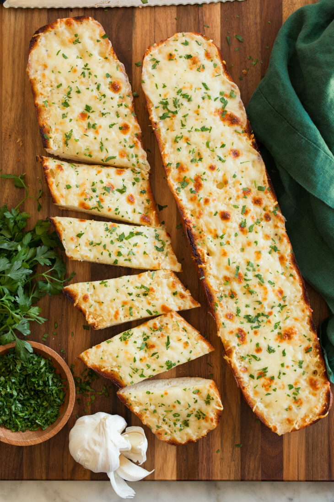

Home
Cheese Toast Receipe

Description
Ingredients
- 6 plain long buns
- Butter
- Mayonaise
- Cheese
Steps
- Gather alll your indgredients into one spot
- get a clean empty bowl
- add 1 table spoon of butter
- add 1 table spoon of mayonaise
- add grated cheese
- mix well until all indgredients are mushed well together
- preheat oven for 15 minutes at 180 c
- bake for 3-5 mins until golden brown